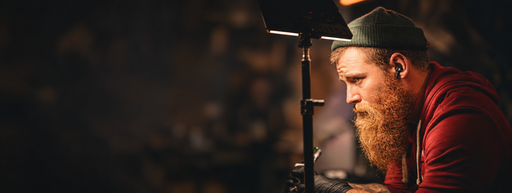

MAD RAM TATTOOVybrané práce
FARBA · PREDLAKTIE
Farba. Svetlo. Detail.
Ďalšie práce a momenty zo štúdia.
@anatoly.tattoo — otvorí sa v novom okne
ANATOLY TSAR
Najprv maliar.
Potom tatér.
Kresba a maľba sú so mnou od detstva. Päť rokov som študoval maľbu a od roku 2012 tvorím aj na koži.
Dnes ma nájdeš v Mad Ram Tattoo v Banskej Bystrici. Máš konkrétny motív alebo len prvú predstavu? Môžeme začať rozhovorom.
PRED PRVÝM STRETNUTÍM
Stačí prvá predstava.
Nemusíš poznať názov štýlu ani mať hotový návrh.
Čo mám napísať do správy?
Opíš, čo ťa láka. Ak vieš, pridaj miesto na tele a približnú veľkosť. Pomôžu aj odkazy na práce, ktoré sa ti páčia.
Ako zistím cenu a voľný termín?
Aktuálnu cenu a možnosti termínu si overíme pri konzultácii podľa konkrétneho motívu a rozsahu. Odoslaná správa ešte nie je potvrdená rezervácia.
Môžem prísť aj bez presného nápadu?
Áno, môžeš začať tým, čo sa ti páči, alebo miestom na tele. Do správy pokojne napíš, že zatiaľ hľadáš smer.
ĎALŠÍ KROK
Tvoj nápad začína
rozhovorom.
Mad Ram Tattoo · Horná 8, Banská Bystrica
info@madramtattoo.sk